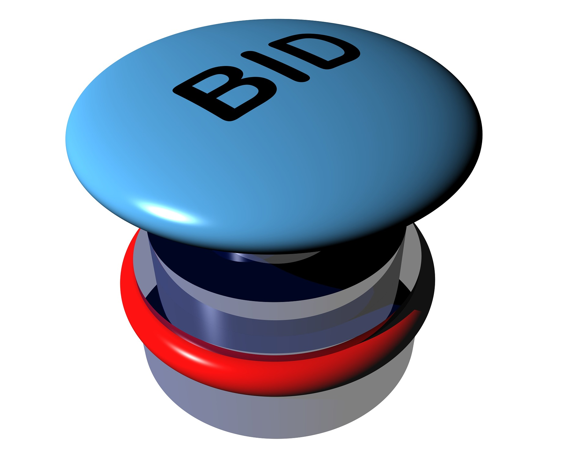

Financial Modelling
Make smarter, data driven decisions with clarity and confidence
Our financial modelling services help businesses forecast, evaluate opportunities, and plan with confidence. Whether preparing for a tender, assessing project profitability, or planning long-term growth, we build robust financial models tailored to your business goals.
Where we need financial models?

Tender Costing & Bid SupportOur ultimate goal for your business:
Better decision-making
Improved profitability assessment
Optimized resource allocation
Reduced financial risks
Stronger strategic planning
If you want to understand your numbers better, explore different scenarios with confidence, or plan your next big move, we’re here to help. Our financial models are built to give you clarity, accuracy, and insights you can actually use. Let’s turn your ideas, assumptions, and data into a roadmap you can trust.
Ready to make clearer, smarter financial decisions? Reach out to us.